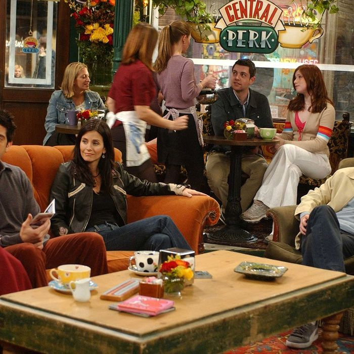

About Us
The Central Perk is a cozy coffee house in Greenwich Village, New York. Furnished with cozy couches and chairs, Central Perk is makes hanging out with friends the ideal way to enjoy our affordable, high-quality coffee. Our friendly staff will gladly provide you with your choice of coffees, teas, and baked goods. While our drinks can be taken to go, your beverage will served in one of our homely mugs when you choose to stay in house. Next time you’re in Greenwich Village, stop by Central Perk for a friendly environment and a great cup of coffee!